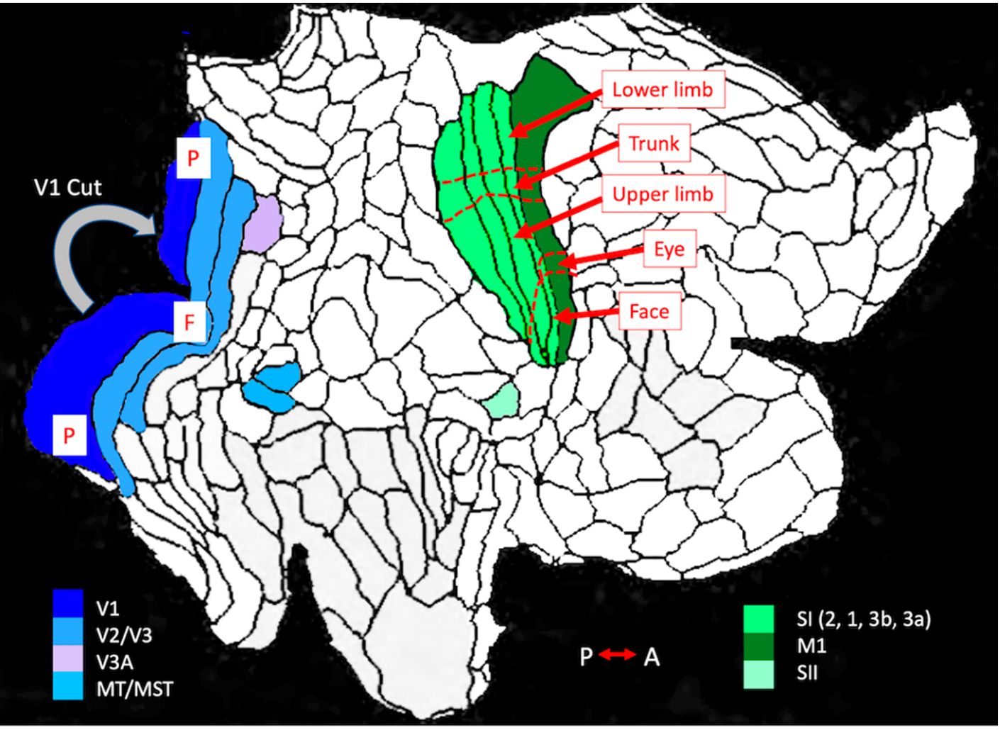
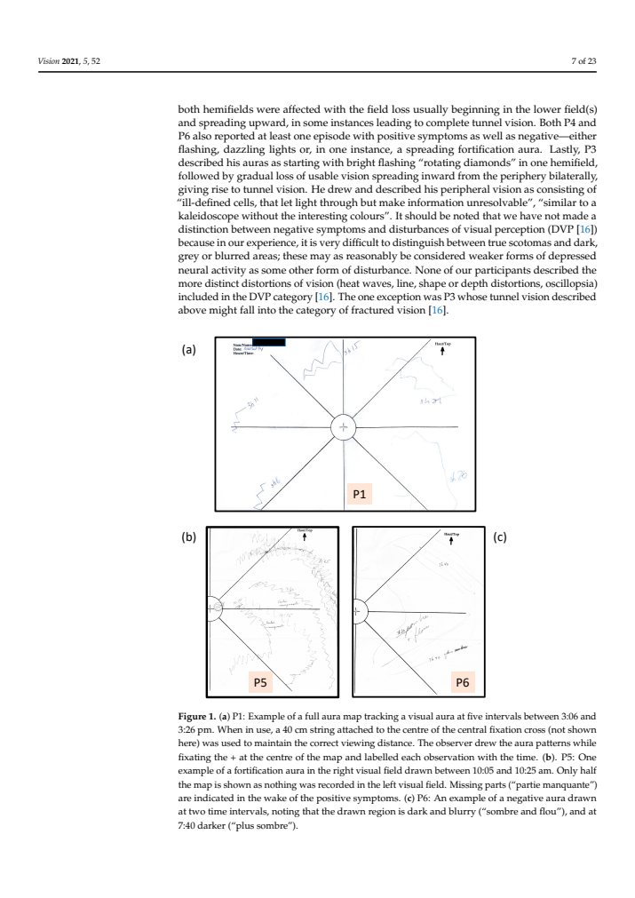
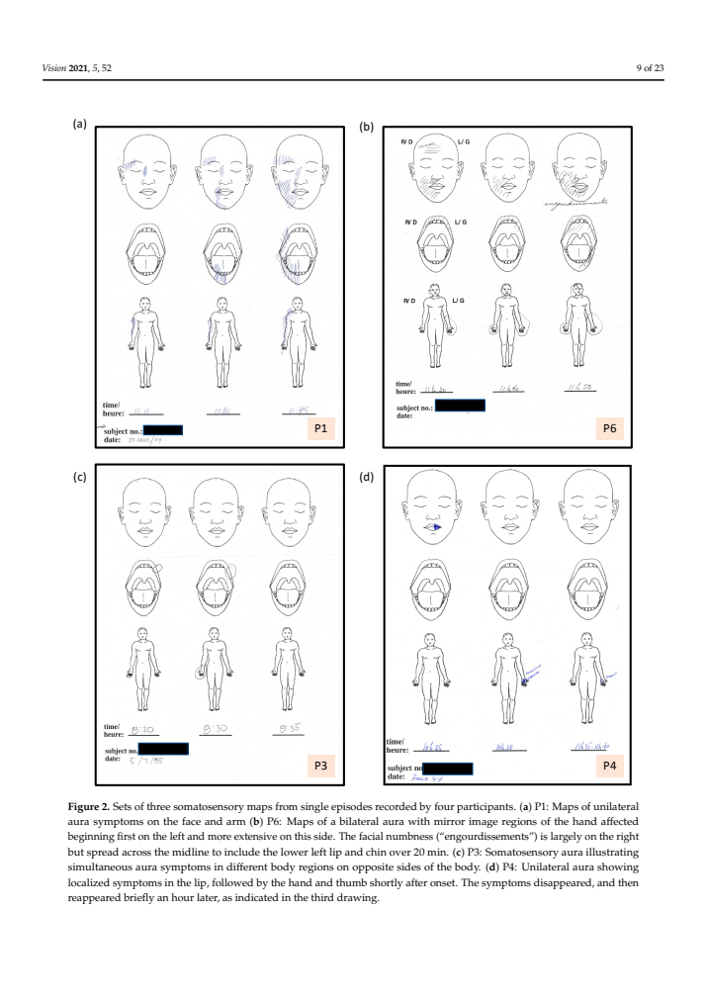
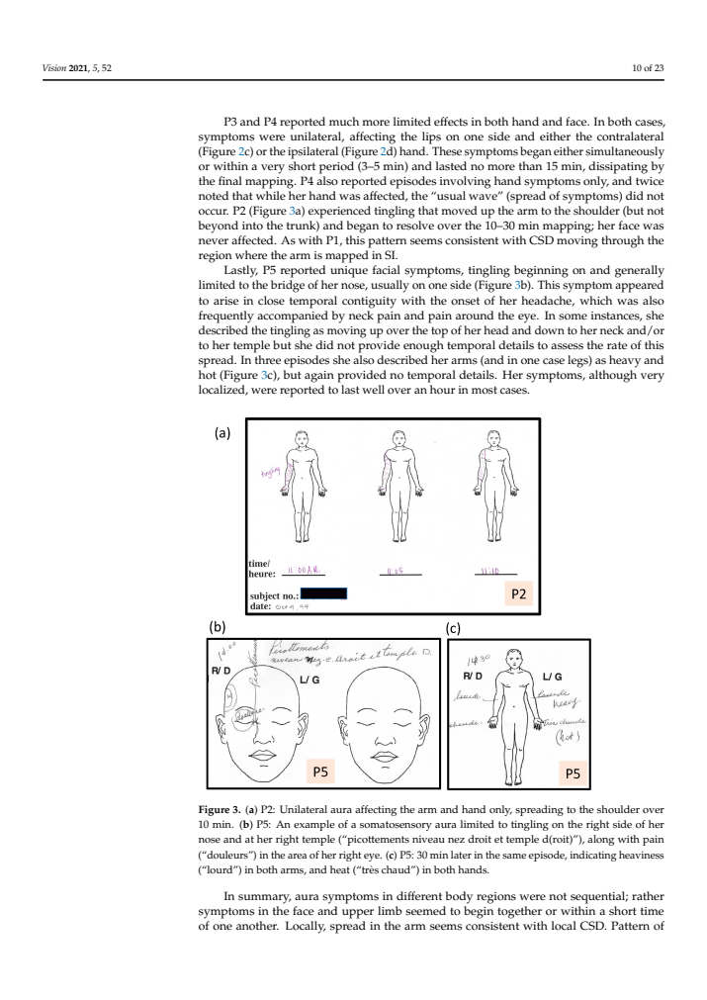
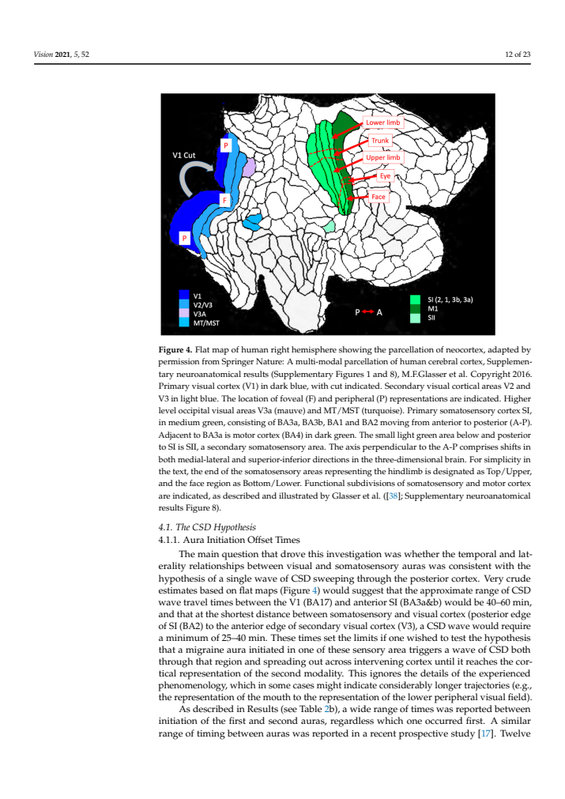

Flatmap tracing review
Source image, saved anatomical outlines and scale endpoints. Unfinished fields are NA.
fig04_human — illustrative summary; not an independent animal
Provisional digitization; inspect anatomical boundaries.


ImageJ ROIs · Calibrated TIFF
| Field | mm² | % neocortex | Status |
|---|
| V1 | NA | NA | provisional; anatomical review required |
| V2/V3 | NA | NA | provisional; anatomical review required |
| V3A | NA | NA | provisional; anatomical review required |
| MT/MST | NA | NA | provisional; anatomical review required |
| S1_areas2_1_3b_3a | NA | NA | provisional; anatomical review required |
| M1 | NA | NA | provisional; anatomical review required |
| SII | NA | NA | provisional; anatomical review required |
| S1 body-part subregions | NA | NA | not_measurable |
All-figure source assessment
Figure 4 is an unscaled human atlas adaptation. Seven field/component observations include the cut V1 pieces, visual domains, S1, M1 and SII. M1 follows the black boundary; red leader lines are annotations. No scale is borrowed from Van Essen and Drury or from a different paper. This atlas view supplies no independent animal or complete-neocortex denominator.
Source-toggle precision review · Field inventory
Figure 1 — assessed_excluded
Visual-field symptom charts, not cortex.

Figure 2 — assessed_excluded
Body symptom charts, not cortex.

Figure 3 — assessed_excluded
Body symptom charts, not cortex.

Figure 4 — digitized_provisional
1 measured view(s), 7 field/component observations; 0 boundaries remain NA for anatomical review. Illustrative, partial, repeated and unscaled restrictions apply.
